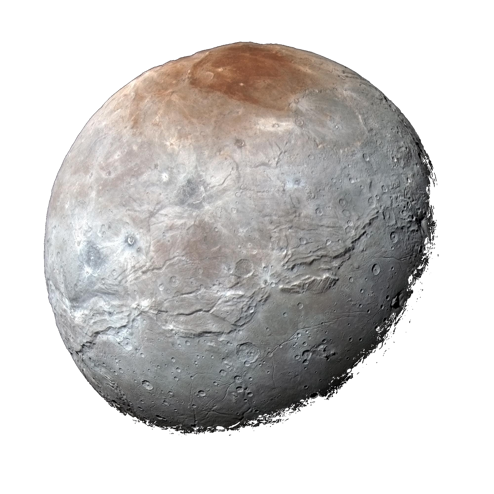

Um pl치netuna + Pl칰t칩 er mj칬g l칤til pl치neta og nei h칰n telst ekki sem reikstjarna. Pl칰t칩 er �쬬칧 sem kallast dverg pl치neta. Pl치netur flokkast sem dverg pl치netur ef a칧 sporbaugur �쬰irra er ekki fullur af loftsteinum �쬬r sem pl치netan var ekki n칩gu st칩r til �쬰ss a칧 hreynsa �쮂�. Pl칰t칩 er pinku l칤til pl치neta svo a칧 h칰n n치칧i ekki a칧 hreynsa sporbaug sinn og misti titilin sem reikistjarna. + Kjarni Pl칰t칩 er 70% af �쭀erm치li hans. Hann er b칰inn til 칰r sil칤kat sem gerir hann frekar kaldann e칧a -233춿c. �룐tta er ekki hitaveita. En ��r치tt fyrir �쬬칧 er lag 치 milli �쭃kku 칤shellu yfirbor칧sinns og kalda kjarnans sem er sj칩r.
N치nar Pl칰t칩 er ekki st칩r e칧a 1.188km a칧 �쭀erm치li sem gerir pl치netuna minni en tungli칧 okkar sem er 1.737km. Pl칰t칩 er ekki s칠rlega merkileg pl치neta 치 papp칤r en ef a칧 ma칧ur s칠r hana 칤 myndum er �쬬칧 allt anna칧 �쬬r sem a칧 pl치netan er me칧 fj칬lbreytt landslag 칰r 칤s og alskonar stein efnum. En mj칬g l칤klegast 칬llum til mikillar undrunar er Pl칰t칩 me칧 5 tungl. st칝rsta tungli칧 heitir Charon og er 606km a칧 �쭀erm치li e칧a helmingin af �쭀erm치li Pl칰t칩s. �룐tta er n칩gu st칩rt fyrir tungli칧 a칧 vera hringl칩tt. Hin tunglin eru l칤til og 칩merkileg sum ekki nema 20km. Charon er merkilegt tungl �쬬r sem a칧 �쬬칧 inniheldur efni sem heitir tholins sem h칠r 치 J칬r칧inni er mikilv칝gt efni fyrir sumar l칤fverur.
H칠rna er Charon
